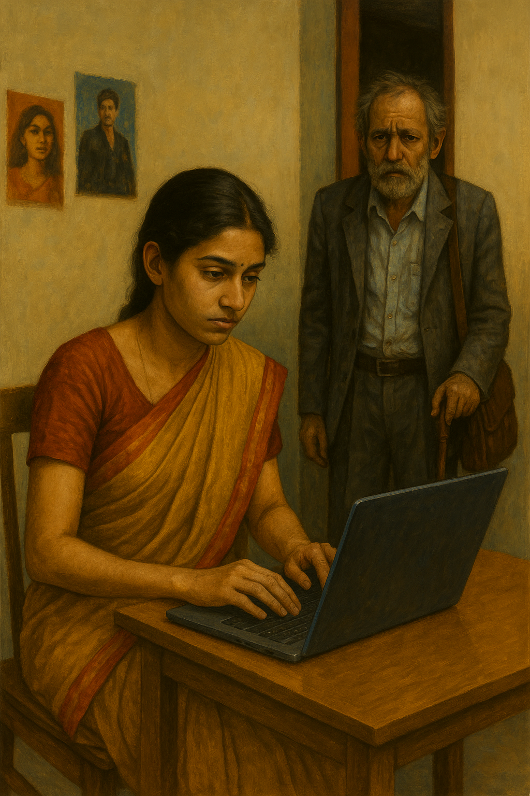

Night thickened. From the divan, Shwetha hissed, "Did you text David?"
"Please, I'm not chasing your boyfriend," Aditi retorted.
"He says you fixed coffee for tomorrow with him!"
"It was his idea. Research for my article on that infamous director Ramya Patil."
Shwetha gives her a stare
"I know, okay!" Aditi shot back, rolling her eyes. "He's the only person who knows about Ramya Patil. Otherwise—" she waved dismissively—"I wouldn't touch your lollipop. You keep him for yourself."
"You are not going to meet him, ask Google about your "Ramya Patil"
Before Aditi could retort, Saraswati leaned forward, her voice tentative. "Can we… search about people also? On Google?"
"Of course," Aditi chuckled, her irritation dissolving. "The famous ones are all there. The rest of us? We're still invisible."
Behind them, Saraswati hesitated, then began to type—slowly, deliberately—murmuring each letter under her breath as though afraid the name itself might vanish if she didn't.
The search bar blinked back at her, the page crawling to load. She leaned closer, eyes unblinking now, breath shallow.
When the results finally appeared, her pupils dilated, jaw slackening as the words on the screen seemed to leap at her.

The half-open door pushed itself wider, protesting with the weary creak of old hinges, the sound cutting through the silence of the flat.
Lightning flickered; the ceiling bulb fluttered. A floorboard creaked. All three women turned.
An elderly man stood at the threshold—immaculate grey suit, neat white beard, leather shoulder satchel, and a polished walking stick. His left ear bore a dark birthmark shaped like a smudge of ink. He smiled, gentle and familiar.
"Saraswati," he intoned.
She rose, recognition dawning too late. Gauging his appearance from top to bottom, a mixture of emotions she raised her hand pointing at him and about to utter something..
The man drew a revolver, small and silvery.
He looked at her, did not seem to care about what she was about to say.
Aditi screamed. Shwetha froze.
Bang…
The shot ripped into Saraswati, punched clean through, and exploded out the glass window in a spray of shards.
Saraswati crumpled, notebook fluttering down like a dying moth.
Shaken and trembling, Aditi and Shwetha shrank back, hiding in fear that the old man's gun might swing their way next.
The stranger looking down at Saraswati drawing her last breath whispered, almost tenderly, "Never put your time in the hands of the ungrateful; in the end we become stories inked by our own actions." He slipped out, shutting the door with polite finality.
Silence roared.